Trabajos.
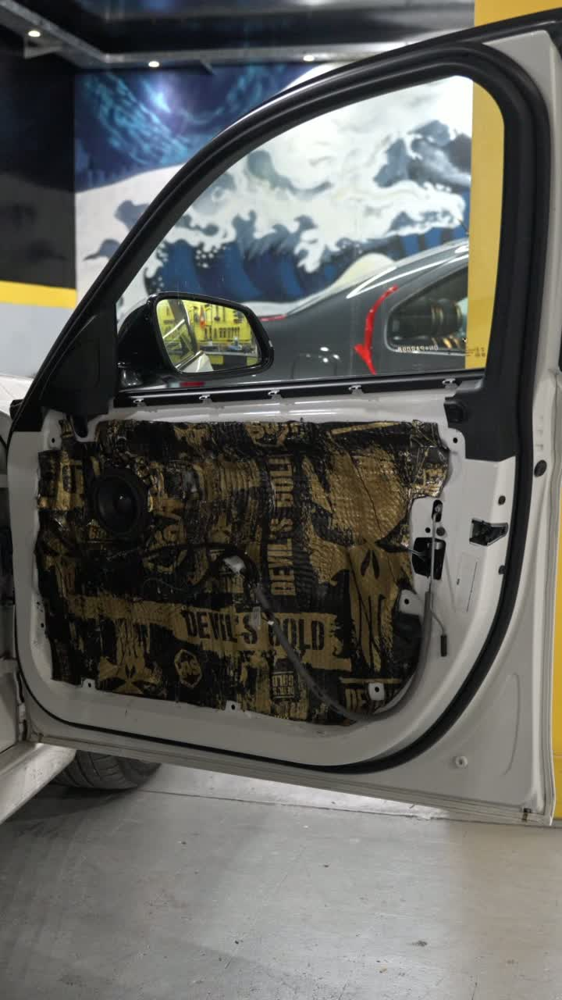
BMW 335i Foto + video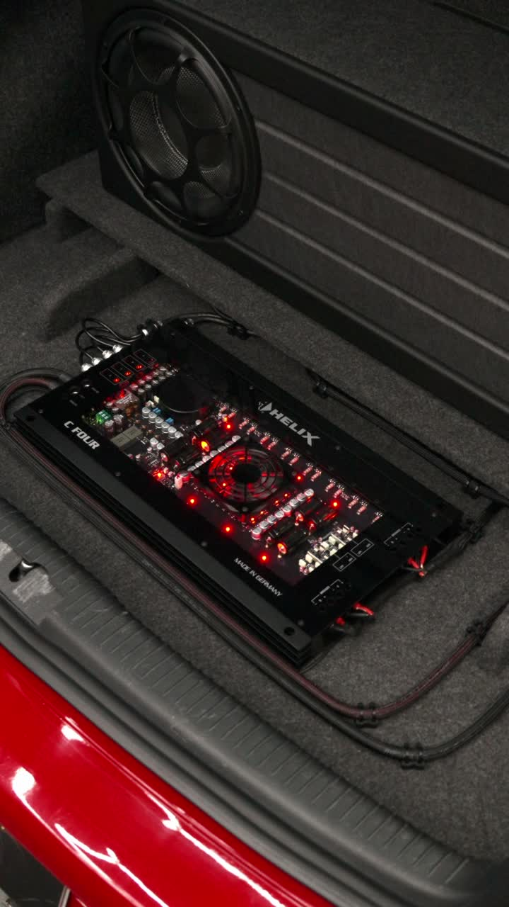
Volkswagen Golf R32 Foto + video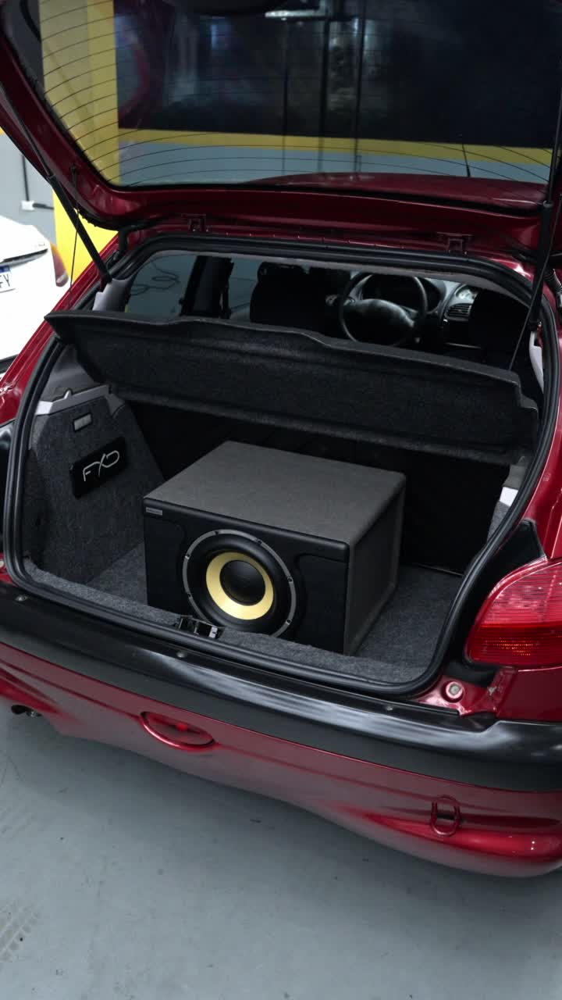
Peugeot 206 Foto + video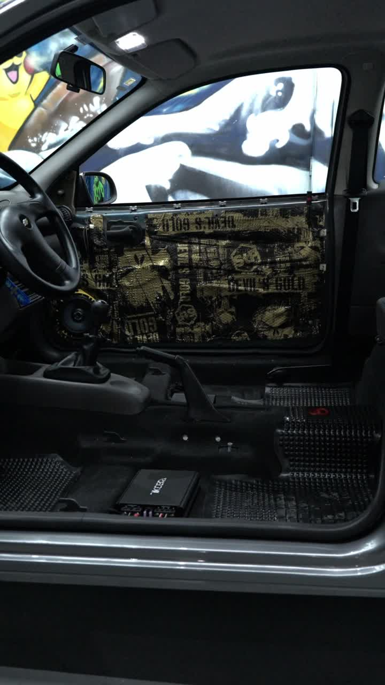
Chevrolet Corsa Foto + video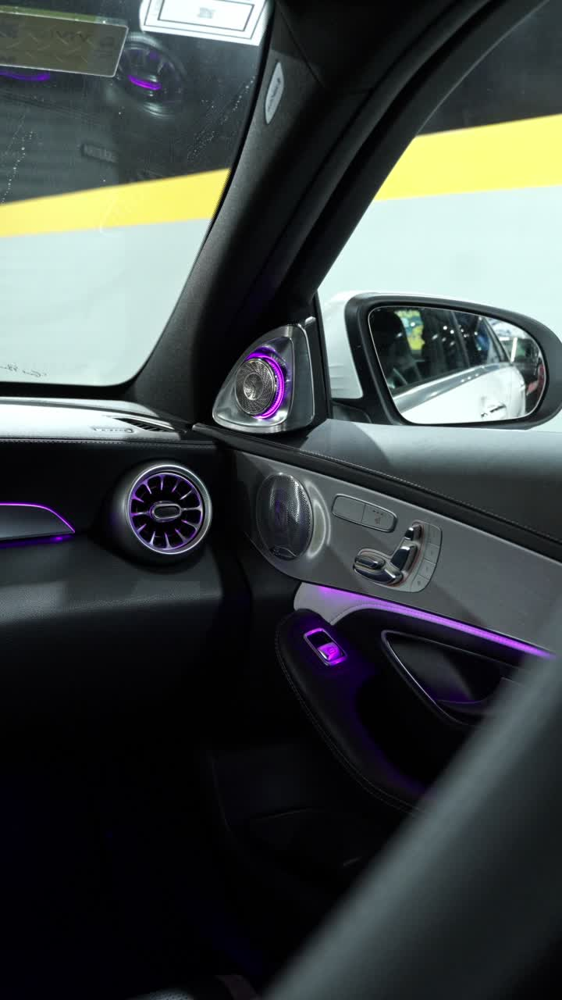
Mercedes-Benz C63s Foto + video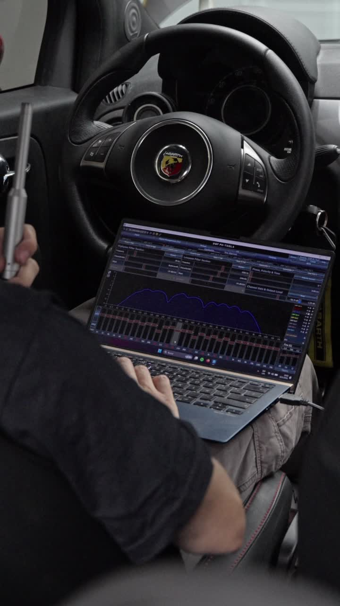
Abarth · Calibración DSP Foto + video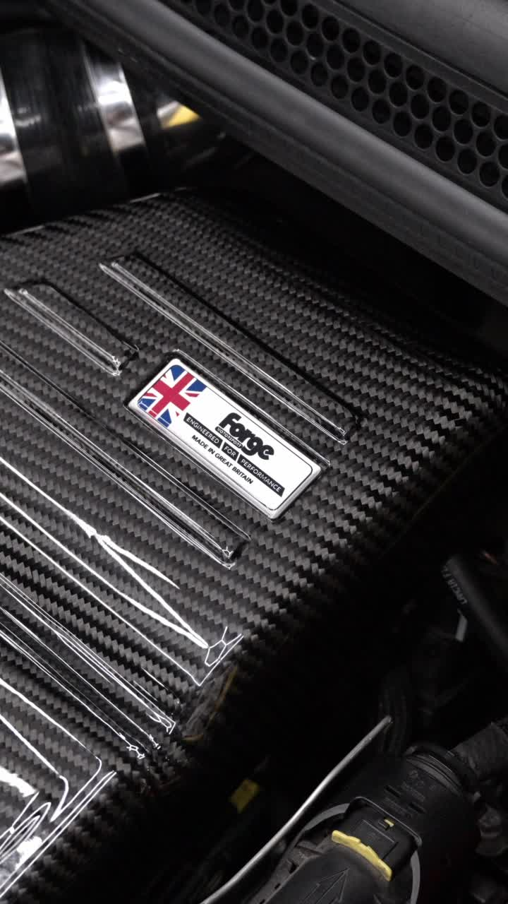
Abarth · Admisión Foto + video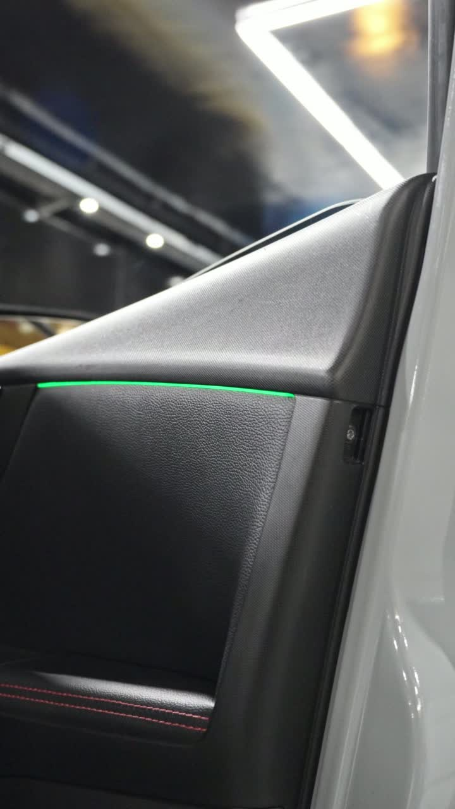
SUV gris Foto + video
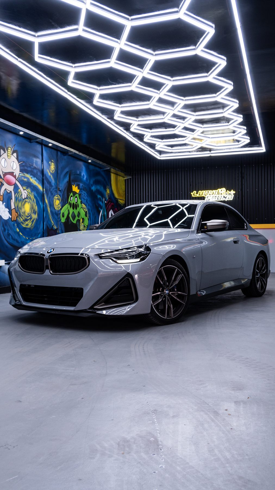
Audio
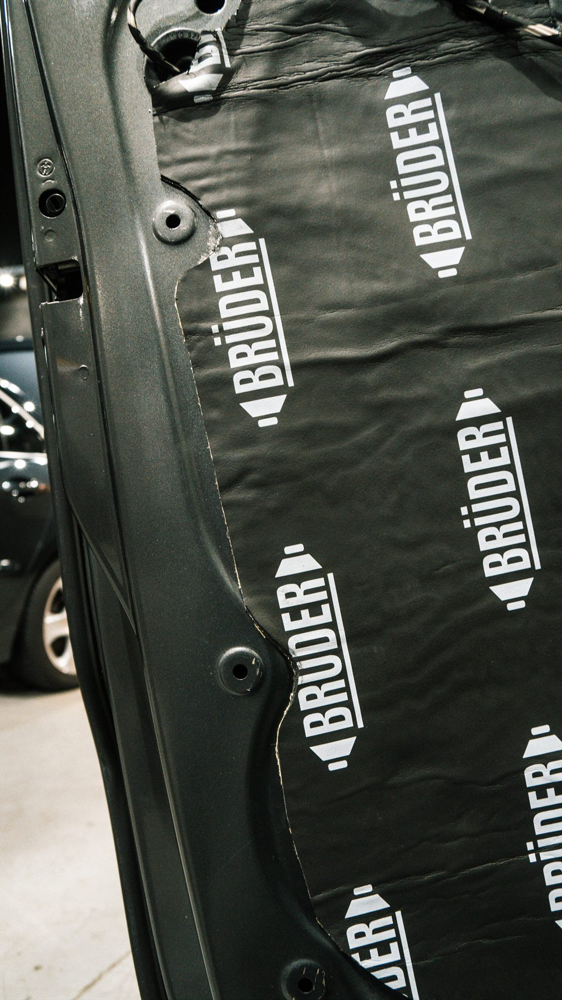
Insonorización
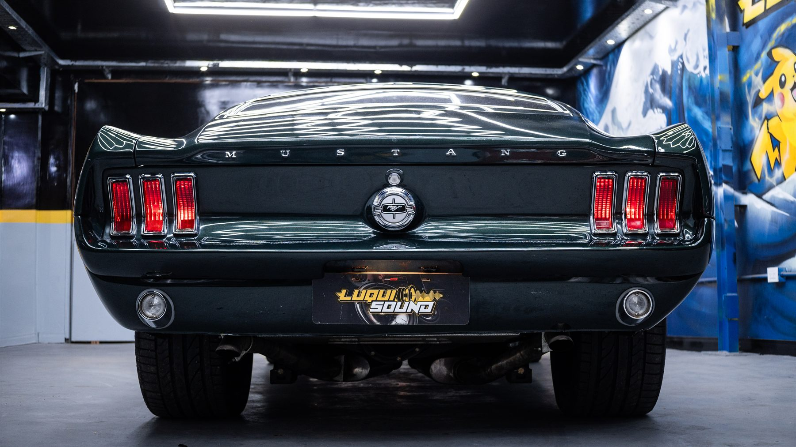
Personalización
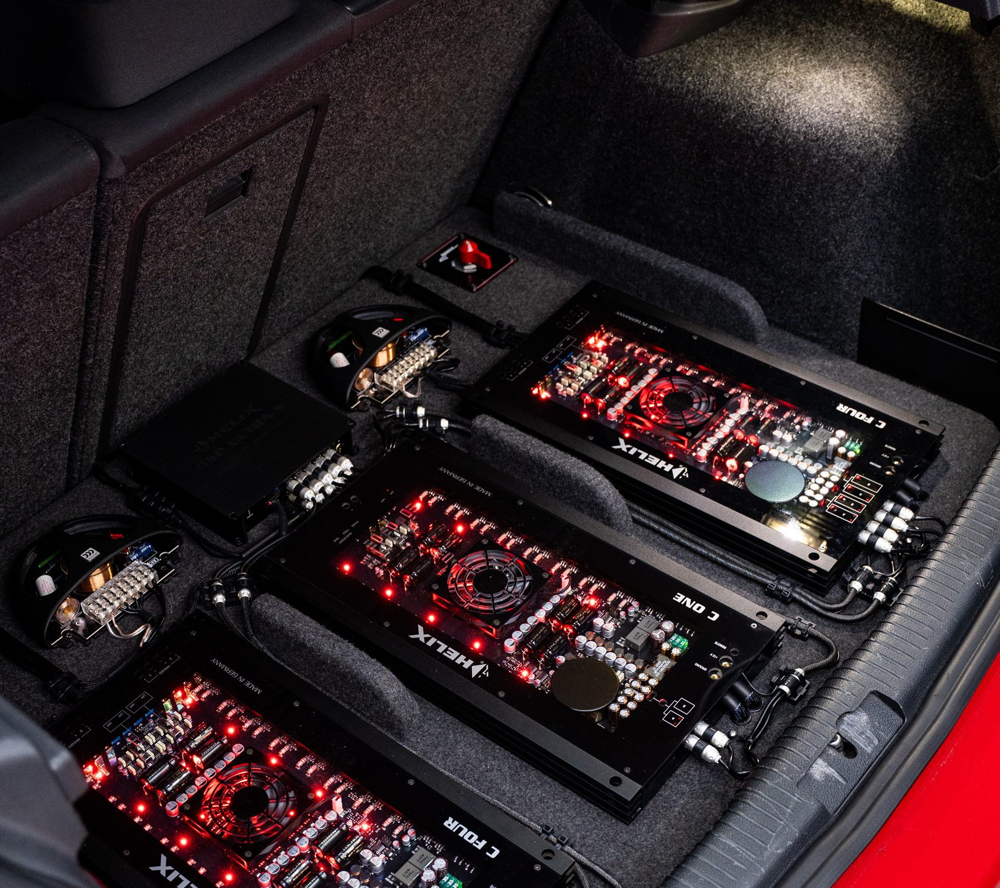
Audio
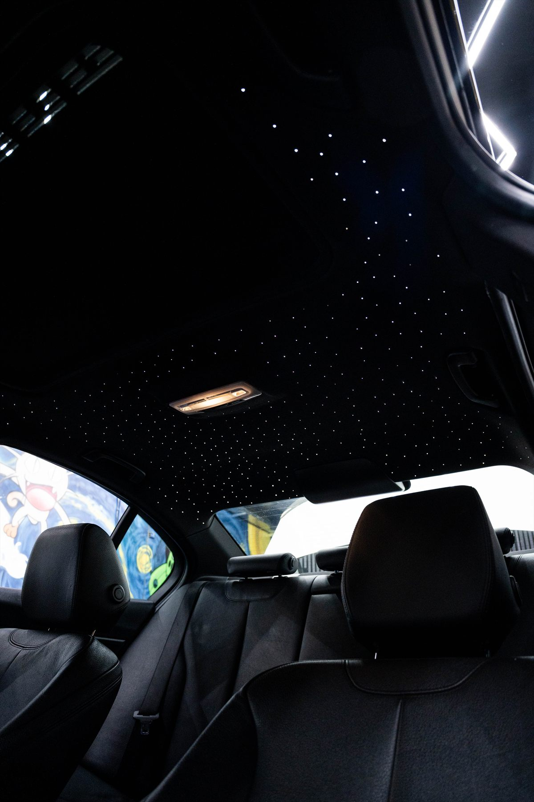
Personalización
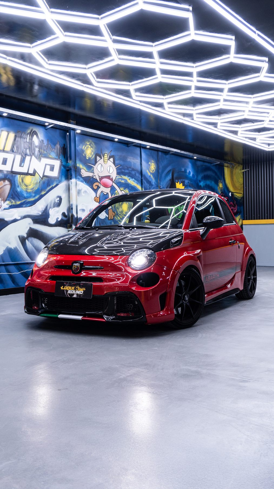
Personalización
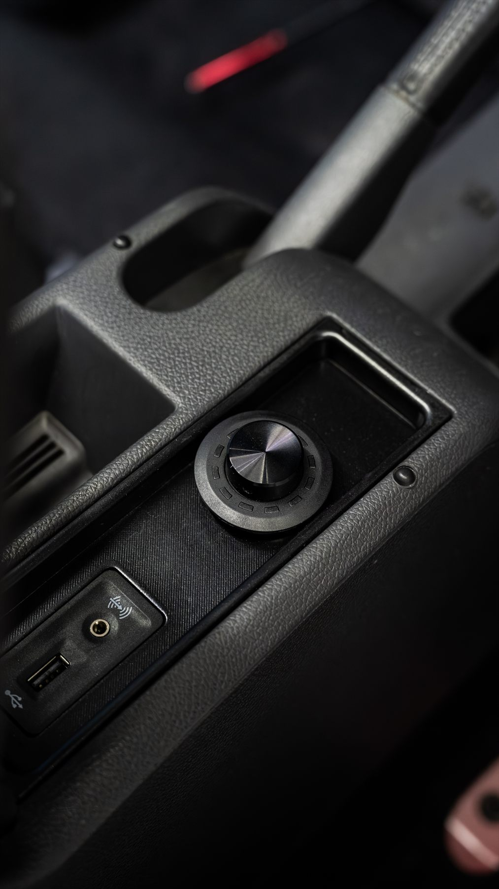
Audio
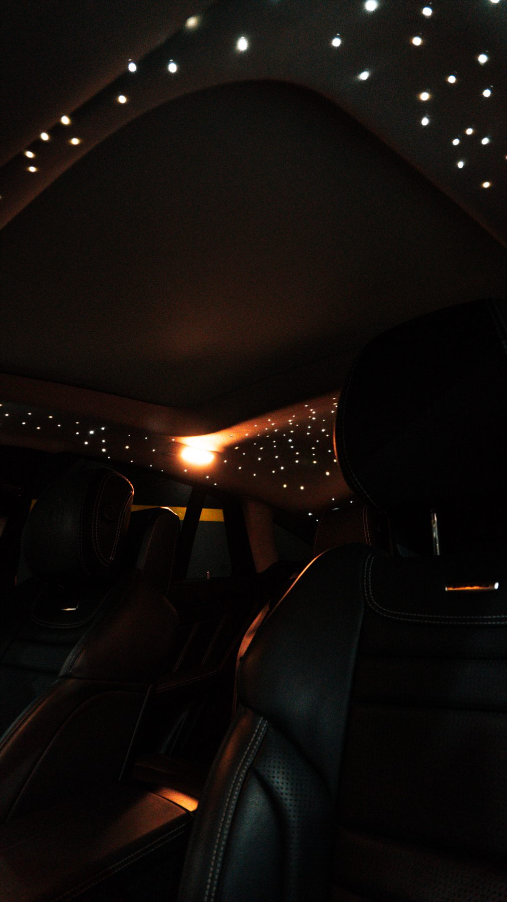
Personalización